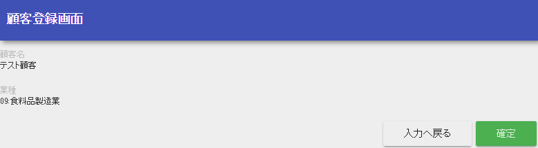
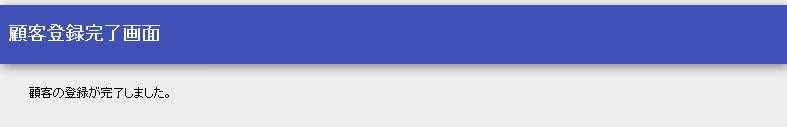
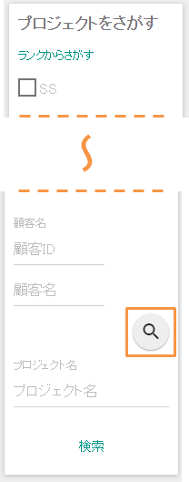
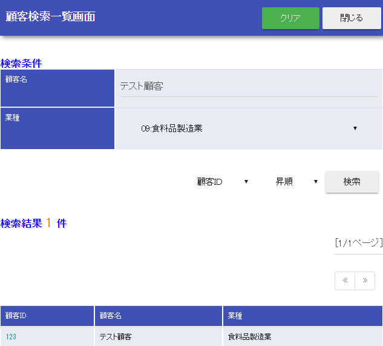

2.3.1.1.4. Register to the Database¶
This chapter describes the process of registering client information to a database.
- Implementation of the registration process
Add a method to ClientAction to process the registration of client information.
- ClientAction.java
public HttpResponse create(HttpRequest request, ExecutionContext context) { Client client = SessionUtil.get(context, "client"); UniversalDao.insert(client); SessionUtil.delete(context, "client"); return new HttpResponse(303, "redirect://complete"); }
- Key points of this implementation
- Retrieve the client entity from the session store and register the entity in the database using Universal DAO.
- Remove client information from session store.
- Specify a redirect to the registration completion screen display as the transition destination for the response object (to prevent multiple registration of client information when the update button of the browser is clicked on the completion screen). For the status code specified in redirect, see Status code.
- Prevent duplicate form submission
Add control to both business action and JSP so that requests are not sent twice when a button is double clicked.
- ClientAction.java
@OnDoubleSubmission public HttpResponse create(HttpRequest request, ExecutionContext context) { // No change in implementation }
- Key points of this implementation
- Assign OnDoubleSubmission for transitioning to the error page when the business action method is executed twice. For more information, see Preventing double submission.
Tip
Configure the default transition destination screen for double submission in the example application. For information on how to specify the default transition destination, see Preventing double submission.
- /src/main/webapp/WEB-INF/view/client/create.jsp
<!-- Parts that are not modified are omitted --> <!-- Return to input, confirm button is only shown on the confirmation screen --> <n:forConfirmationPage> <n:button uri="/action/client/back" cssClass="btn btn-raised btn-default">Return to input</n:button> <!-- Specify false for allowDoubleSubmission attribute --> <n:button uri="/action/client/create" allowDoubleSubmission="false" cssClass="btn btn-raised btn-success">Confirm</n:button> </n:forConfirmationPage>
- Key points of this implementation
- JavaScript that controls duplicate form submission is added by specifying false in allowDoubleSubmission attribute of button tag.
- Double submission control is also performed on the server in consideration of the case where JavaScript in the browser is disabled.
- Implementation of the display process of the registration completion screen
Implements the display process of the registration completion screen.
- Implementation of a business action method
Implements the display process of the registration completion screen.
- ClientAction.java
public HttpResponse complete(HttpRequest request, ExecutionContext context) { return new HttpResponse("/WEB-INF/view/client/complete.jsp"); }
- Create a JSP for the registration completion screen
Create a new JSP for the registration completion screen
- /src/main/webapp/WEB-INF/view/client/complete.jsp
<%@ page language="java" contentType="text/html; charset=UTF-8" pageEncoding="UTF-8" %> <%@ taglib prefix="c" uri="http://java.sun.com/jsp/jstl/core" %> <%@ taglib prefix="n" uri="http://tis.co.jp/nablarch" %> <%@ page session="false" %> <!DOCTYPE html> <html> <head> <title>Client registration completion screen</title> </head> <body> <n:include path="/WEB-INF/view/common/menu.jsp" /> <n:include path="/WEB-INF/view/common/header.jsp" /> <div class="container-fluid mainContents"> <section class="row"> <div class="title-nav"> <span class="page-title">Client registration completion screen</span> </div> <div class="message-area message-info"> Customer registration completed </div> </section> </div> <n:include path="/WEB-INF/view/common/footer.jsp" /> </body> </html>
- Communication confirmation
Confirm that the registration process is implemented correctly by following the below steps.
- Displays the client registration screen(顧客登録画面).
- Select a full-width string for the client name(顧客名) and an arbitrary value for the industry type(業種) and click the “registration”(登録) button.

- Confirm that the registration confirmation screen is displayed, and the client name and industry type entered in 2 are displayed as labels.
- Click the “Confirm”(確定) button to confirm that the registration completion screen is displayed.
- Click the search button in the client column of the side menu for transitioning to the client search screen.
- Confirm that the registered client information can be searched.

This completes the description of the registration function.